천안 불당 출장
일반 냉장고 깊이 맞춤 · 리폼·제작, 대표가 직접 재고 짜서 설치해요.
010-4835-3353 전화 상담사진 한 장으로 무료 견적 받아보기
사진 몇 장이면 금액을 알려드려요 · 대표가 직접 시공 · 처짐 평생 AS
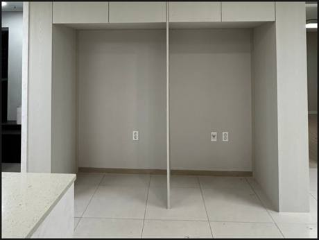
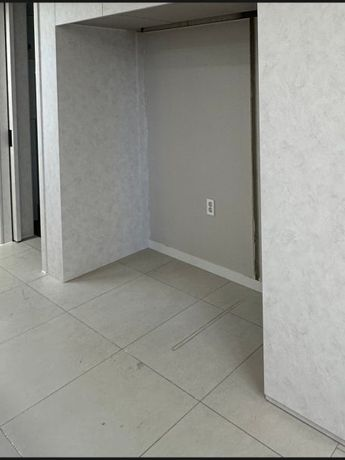
키친핏이 아닌 일반 냉장고(뚱냉)는 깊이가 깊어서 냉장고장 앞으로 튀어나오기 쉬워요. 냉장고 깊이와 문 여는 공간을 보고, 칸막이만 빼서 넣을지 깊이에 맞춰 새로 짤지 정해요.
천안·아산도 정기적으로 가는 지역이에요. 입주 전에 사 둔 LG 오브제 냉장고가 냉장고장 기둥 때문에 들어가지 않던 천안 현장처럼, 냉장고 모델에 맞춰 자리를 만들어 드려요.
※ E0 등급 친환경 자재(포름알데히드 방출 0.5mg/L 이하)만 사용해요.
천안 불당 뚱냉 냉장고장
전체 철거가 아니에요. 프레임과 측판, 상부장은 살리고 걸리는 부분만 빼요.
칸막이만 잘라내면 상부장이 처지기 쉬워요. 상부장과 천장을 2단으로 보강해요.
칸막이가 있던 자리는 도배와 마루가 안 돼 있어서, 자재로 채워 마감해요.
단순 칸막이 제거는 3~4시간이면 끝나고 대부분 그날 냉장고를 넣어요.
가까운 지역 대표 현장
세종
기존 냉장고장은 냉장고 두 대를 나란히 넣도록 가운데에 세로 칸막이가 있는 구조였어요. 고객님은 큰 냉장고 한 대를 쓰실 예정이라 칸막이가 있는 상태로는 여유 있게 들어가지 않았어요. 장 전체를 철거하기보다 필요한 부분만 바꾸는 편이 효율적인 상황이었어요.
두 칸으로 나뉘어 있던 냉장고장이 대형 냉장고 한 대가 들어가는 넓은 공간으로 바뀌었어요. 남는 우측 공간은 수납장으로 만들어 비는 곳 없이 쓸 수 있게 됐어요.
진행 순서
반대쪽 상부장이 처지지 않게 지지대로 받치고 상부장을 내려요.
칸막이와 기둥을 빼고 냉장고 들어갈 폭을 다시 재요.
상부장과 천장을 보강하고 수평을 맞춰 다시 걸어요.
바닥과 벽을 마감하고, 남는 폭은 수납장으로 만들어요.
실제 현장
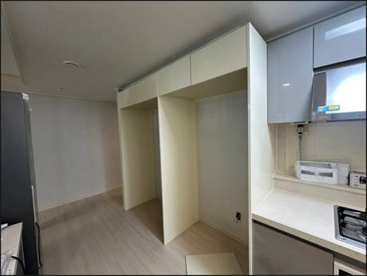
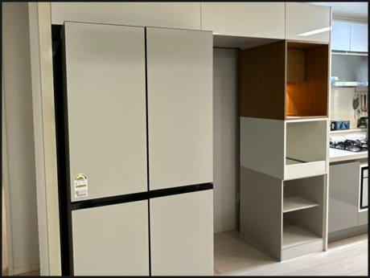
쓸 수 있는 부분은 남기고 상부장, 수납장, 슬라이드 밥솥장을 새로 제작.
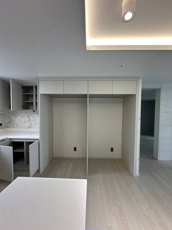
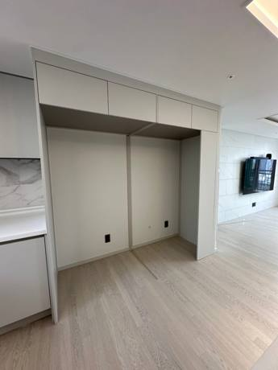
키친핏 냉장고가 안 들어가던 집. 상부장을 살려 비용을 아끼고 당일 사용.
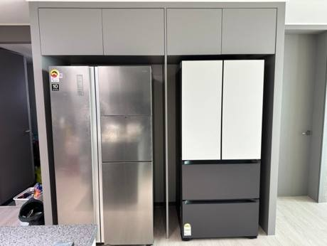
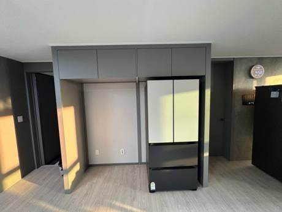
새 냉장고 자리가 애매하던 신축 세대에 자리를 만들었어요.
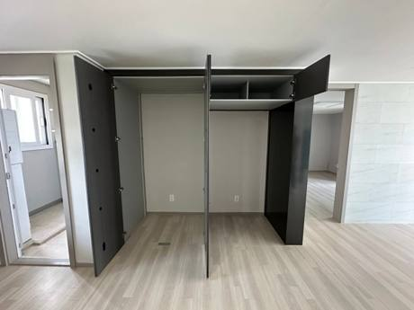
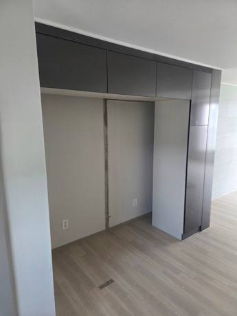
기둥을 빼고 상부장과 천장을 보강해 처짐 없이 설치.
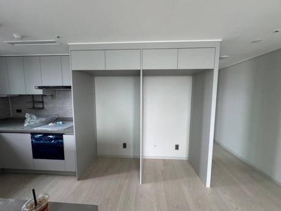
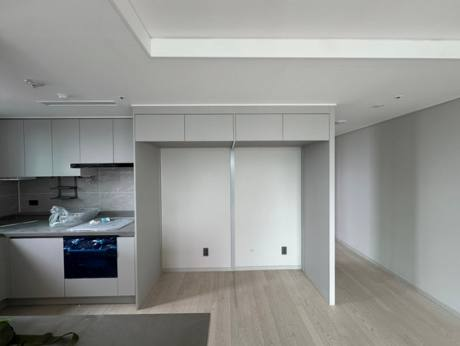
기존 냉장고장 자재를 다시 써서 공간만 넓혔어요.
칸막이 제거 30만원, 새로 짜기 100만원부터 (VAT 별도). 사진을 보고 우리 집 금액을 알려드려요. 사진 보내고 금액 받기 · 비용 자세히 보기
사진 한 장 무료견적
작업 중엔 소음 때문에 전화를 못 받을 때가 많아요. 문자로 남겨주시면 작업 끝나는 대로 바로 연락드려요.
문자 버튼만 누르세요.
보낼 내용 양식이 미리 적혀 있어요.
[네모의꿈 견적 문의] 1. 지역·아파트 : 천안 불당 2. 원하는 작업 : 뚱냉(일반 냉장고) 자리 냉장고장 3. 냉장고 모델 : (아시면) 4. 사진 : 냉장고장 정면·양옆 사진 첨부해 주세요 (없으면 나중에 보내셔도 돼요)
빈칸만 채우고 사진 첨부해서 보내면 끝이에요.
사진 한 장으로 무료 견적 받아보기 전화 010-4835-3353사진이 없어도 괜찮아요. 작업 중엔 전화를 못 받을 때가 많아 문자가 가장 빨라요.
자주 묻는 질문
네. 천안 불당 뚱냉 냉장고장 상담부터 실측, 시공, AS까지 대표가 직접 가요. 사진과 아파트 이름을 문자로 보내 주시면 일정과 금액을 함께 알려드려요.
네. 폭과 깊이를 보고 칸을 다시 나누거나, 깊이에 맞춰 새로 짜요. 모델명을 알려주시면 먼저 계산해 드려요.
상부장을 그대로 쓰고 칸막이만 빼는 리폼은 30만원, 남는 폭에 틈새장까지 짜면 70만원이에요(VAT 별도). 철거, 상부 보강, 폐자재 처리는 기본가에 들어 있어요.
권하지 않아요. 상부장은 높고 무거워서 떨어질 위험이 있고, 보강 없이 빼면 시간이 지나며 장이 주저앉을 수 있어요.
현장 사진 2~3장, 냉장고 모델명, 아파트 이름을 문자로 보내 주세요. 작업 중엔 전화를 못 받을 때가 많아 문자가 가장 빨라요.